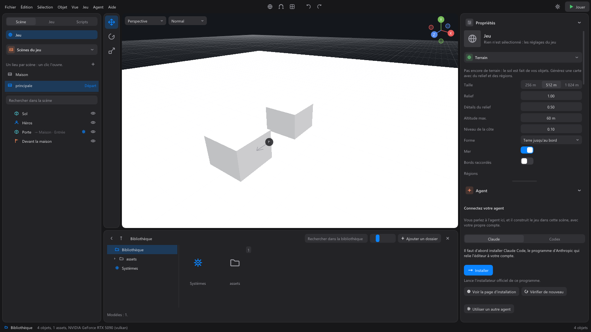

L'onglet Scène¶
Le premier onglet de la colonne de gauche. On y choisit le lieu (la scène), puis ce qu'il contient (ses objets), comme les dossiers dans l'explorateur Windows.

La ligne du jeu¶
Tout en haut, avec l'icône du globe, une ligne porte le titre du jeu (« Jeu » au départ ; Ce jeu si le titre est vide). Au survol : « Les réglages du jeu : son ciel, sa fenêtre, son terrain ». Un clic désélectionne tout, et les Propriétés montrent alors les réglages du jeu : son terrain, son ciel et sa lumière, sa fenêtre. Voir Les propriétés.
Scènes du jeu¶
Dans un projet, la section Scènes du jeu liste les lieux de votre jeu : une scène par lieu (l'extérieur, l'intérieur d'une maison, une grotte, un niveau). « Un lieu par scène : un clic l'ouvre. »
- Ouvrir une scène : un clic sur son nom. Si la scène ouverte a des changements, l'éditeur demande d'abord s'il faut les enregistrer.
- Créer une scène : le + à droite du titre (« Nouvelle scène : un autre lieu du jeu (une maison, une grotte, un niveau) »).
- Départ : le mot affiché à droite de la scène où le jeu commence. Le jeu exporté s'ouvre sur elle.
- Au survol, une scène montre ses passages (vers quelle scène ils mènent) et ses points d'arrivée.
- Clic droit sur une scène :
| Commande | Effet |
|---|---|
| Ouvrir | Ouvre cette scène. |
| Renommer | Change son nom sur place. Les passages qui y mènent sont mis à jour dans toutes les scènes. |
| Dupliquer | Crée une copie de la scène. |
| Supprimer | Demande confirmation, et liste les passages et scripts qui la citent et ne mèneront plus nulle part. La scène est mise de côté dans le dossier de travail du projet (.worldmint, « scènes supprimées ») : rien n'est perdu. Ne se suppriment pas : la scène de départ, celle qui contient le personnage du joueur, et la dernière scène du jeu. |
| Commencer le jeu ici | En fait la scène de départ. |
Pour relier les scènes entre elles (une porte qui mène dans une maison), voir Projets et scènes.
Les secteurs (grandes cartes)¶
Dans un grand monde, la section Secteurs découpe la carte en parties nommées : le port, la vieille ville, la forêt du nord. On s'y retrouve, on travaille sur une partie à la fois, et on verrouille ce qui est fini. « Un clic : y travailler seul. »
- Créer un secteur : le + à droite du titre, puis un cliquer-glisser sur le sol, dans une vue (de préférence la vue de dessus, 7 du pavé numérique). Sa taille s'affiche pendant le tracé ; Échap annule. Le secteur se nomme tout de suite, comme un nouveau dossier.
- Travailler sur un secteur : un clic sur son nom, dans la liste ou sur son étiquette dans la vue. La liste des objets, la sélection, Ctrl+A et le cadrage ne voient plus que lui ; les autres objets sont cachés dans les vues (rien n'est supprimé), et vu de dessus le reste de la carte s'assombrit. La ligne « Secteur « Port » : 1 462 objets cachés autour » le rappelle au-dessus de la liste. Toute la carte montre tout de nouveau.
- Le nombre à droite d'un secteur compte ses objets : un bâtiment fait de vingt pièces compte une fois.
- Le cadenas verrouille un secteur : ni vous ni l'agent ne pouvez plus rien y déplacer, créer, supprimer ou peindre, son relief compris. Un geste refusé revient en place, et la console dit « Refusé : secteur verrouillé ». Un second clic le déverrouille. Ctrl+Z reste libre.
- Double-clic sur un secteur : la vue le cadre en entier.
- Clic droit : Travailler sur ce secteur, Cadrer dans la vue, Renommer, Verrouiller ou Déverrouiller, Supprimer (ses objets restent où ils sont).
- L'agent voit les mêmes secteurs : il travaille sur celui que vous avez choisi, et quand il en choisit un, l'éditeur le montre (« L'agent travaille sur le secteur… »). Il ne touche jamais un secteur verrouillé.
Un objet appartient au secteur où il est : un bâtiment, une copie d'objet réutilisable, suit la place de sa racine ; un dossier qui ne sert qu'à ranger se montre avec ce qu'il contient.
Les objets de la scène¶
Sous les scènes, le champ Rechercher dans la scène filtre la liste : elle montre alors à plat tous les objets dont le nom contient ce que vous tapez.
La liste montre les objets de la scène ouverte, rangés comme des dossiers :
- La flèche (chevron) à gauche ouvre ou ferme ce que contient un objet ; un double-clic sur la ligne fait de même. Le nombre à droite compte tout ce qu'il contient.
- L'icône dit la sorte d'objet : modèle, forme de base, dossier, personnage joué, caméra, point d'arrivée (drapeau), terrain (globe), région ou eau du terrain (une pastille de sa couleur), sorte de plante (feuille). Une copie d'un objet réutilisable a l'icône de copie.
- La roue dentée signale un objet qui porte des systèmes ; au survol, leurs noms (« Systèmes : ... »).
- Un passage affiche à la suite de son nom la scène où il mène (
→ Maison · Entrée), en rouge s'il ne mène nulle part. - L'œil à droite masque l'objet dans la vue de l'éditeur seulement (« Masquer dans la vue, sans changer le jeu ») ; un second clic le réaffiche. Vue > Tout réafficher réaffiche tout.
- Les objets de même nom (« Mur 1 », « Mur 2 », « Mur 3 ») sont regroupés sous une ligne « Mur » avec leur nombre : un clic sur la ligne les sélectionne tous, la flèche les montre un par un. Une forêt de cent arbres reste lisible.
- Les plantes d'une sorte de plante se listent sous elle, avec le mot « plante » : elles se choisissent comme des objets. Voir Le terrain.
Choisir¶
- Clic : choisit l'objet. Ctrl + clic l'ajoute à la sélection ou l'en retire. Maj + clic choisit tous les objets entre le précédent et celui-ci.
- La sélection de la liste et celle de la vue 3D sont les mêmes.
Ranger¶
- Glisser un objet sur un autre le range dedans : il devient son enfant et le suit quand on le déplace. Toute la sélection suit si l'objet glissé en fait partie.
- Glisser un objet dans le vide, sous la liste, le sort de son dossier.
- Grouper (Ctrl+G) range la sélection dans un nouveau dossier ; Dégrouper (Ctrl+Maj+G) défait le dossier.
- Glisser un système depuis le dossier Systèmes de la bibliothèque sur une ligne le pose sur cet objet (ou sur toute la sélection). Sur la ligne d'un groupe de même nom, il crée un dossier de ce nom qui contient le groupe et porte le système : on le règle alors une seule fois pour tous.
Le clic droit¶
Sur un objet :
| Commande | Raccourci | Effet |
|---|---|---|
| Créer dedans | Crée un objet à l'intérieur de celui-ci : Dossier, Caméra, Lumière, Point d'arrivée, Zone, puis les formes Cube, Sphère, Cylindre, Capsule, Plan. | |
| Renommer | F2 | Écrit le nouveau nom sur place. Entrée valide, Échap annule. |
| Dupliquer | Ctrl+D | Copie la sélection, avec ce qu'elle contient. |
| Copier | Ctrl+C | Copie la sélection, à coller avec Ctrl+V. |
| Faire un objet réutilisable | En fait un modèle à poser plusieurs fois : voir La bibliothèque. | |
| Grouper | Ctrl+G | Range la sélection dans un nouveau dossier. |
| Dégrouper | Ctrl+Maj+G | Sort le contenu du dossier et le supprime. |
| Supprimer | Suppr | Supprime la sélection. Le personnage joué ne se supprime pas tant qu'un autre joueur n'est pas désigné. |
Dans le vide sous la liste, le clic droit propose les mêmes objets à créer, à la racine de la scène.
Ce qu'on peut créer¶
| Objet | Ce que c'est |
|---|---|
| Dossier | Range d'autres objets ; ne se voit pas en jeu. Un système posé sur un dossier vaut pour tout ce qu'il contient. |
| Caméra | Une caméra placée, qui montre le jeu depuis là où elle est : voir Les propriétés. |
| Lumière | Une lumière placée, une ampoule ou un projecteur, créée un peu au-dessus de là où vous regardez : voir La lumière et les ombres. |
| Point d'arrivée | L'endroit où le joueur apparaît quand il arrive d'une autre scène, tourné dans le sens de la flèche. Il est créé là où vous regardez, posé au sol. |
| Zone | Une boîte invisible en jeu qui porte le système Zone (activé au besoin) : elle annonce qui entre et qui sort. Une plaque de pression, un piège, une ligne d'arrivée : voir La physique et les zones. |
| Cube, Sphère, Cylindre, Capsule, Plan | Les formes de base, pour bâtir sans modèle. |